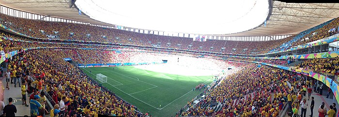

SELECCION DE COLOMBIA
La selección de fútbol de Colombia es el equipo que representa a dicho país en las competiciones oficiales de fútbol masculino desde 1924. Su organización está a cargo de la Federación Colombiana de Fútbol (FCF) y desde 1936 se encuentra afiliada tanto a la FIFA como a la Conmebol, de la cual es miembro asociado. Disputó su primer encuentro el 17 de febrero de 1926 frente a Costa Rica, a la cual venció por 4-1.[3][4] La selección colombiana ha participado en seis Copas Mundiales de Fútbol (1962, 1990, 1994, 1998, 2014 y 2018). En Brasil 2014 cosechó su mejor participación llegando a cuartos de final, quedando en la quinta posición del torneo.[6] Su mayor logro internacional es la Copa América 2001.[7] También obtuvo dos subcampeonatos, en 1975 y 2024. Llegaría a semifinales varias veces. El título del 2001 le permitió participar en la Copa FIFA Confederaciones 2003 donde alcanzaría las semifinales y posteriormente el cuarto lugar.[8] La 'Tricolor',[2] como es conocida, también logró destacadas participaciones internacionales, obteniendo de los Juegos Centroamericanos y del Caribe la medalla de oro en 1946, la medalla de bronce en 1938 y de los Juegos Bolivarianos la medalla de oro en 1951 y la de plata en 1961, 1973 y 1981.[n 1][9] Entre los jugadores más destacados están el centrocampista Carlos Valderrama (considerado uno de los mejores jugadores de la historia de Colombia, ocupando el 39.º lugar en el ranking del mejor jugador sudamericano del siglo XX publicado por la IFFHS en 2004), el centrocampista Marcos Coll (autor del único gol olímpico anotado en una Copa Mundial de Fútbol), el portero René Higuita (elegido por la IFFHS como el octavo mejor golero sudamericano del siglo XX en 2004 y recordado por la jugada del Escorpión), los delanteros Faustino Asprilla (ocupó el sexto lugar en la elección del Jugador Mundial de la FIFA 1993), Radamel Falcao García (elegido quinto mejor jugador del mundo en 2012, según la votación del FIFA Balón de Oro 2012) y James Rodríguez (ganador de la Bota de Oro en la Copa Mundial Brasil 2014 y el Premio Puskás 2014). En varias ocasiones se encontró dentro de las 10 mejores selecciones del escalafón de la FIFA. Su mejor posición la ha conseguido durante los meses de julio y agosto de 2013, ubicándose en la tercera posición del escalafón.[10][11] En la actualidad se encuentra en el puesto número 12. Tras el establecimiento de una única asociación nacional de fútbol (que había puesto fin a las divisiones de adolescentes y veinteañeros) en 1924,[12] los ejecutivos se centraron primero en una competición que reunía a varias selecciones departamentales. Años más tarde, en julio de 1937, para participar en un torneo internacional de fútbol organizado para conmemorar el 400.º aniversario de la fundación de Cali,[12] la federación formó una selección que combinaba jugadores de diversas representaciones locales. A pesar de que la prensa la iba a definir como la primera selección, el torneo en Cali no fue considerado una competencia oficial. Otro de los primeros partidos de la selección de fútbol de Colombia fue el 10 de febrero de 1938, durante la IV edición de los Juegos Centroamericanos y del Caribe. Dirigido por el teniente Alfonso Novoa, Colombia salió a la cancha a las 9:45 a. m. en la Ciudad de Panamá contra la selección de fútbol de México, en un partido arbitrado por el uruguayo José Mirabal, quien dirigió todos los partidos del torneo. El equipo de Colombia estuvo conformado por Escorcia, Lugo, Lara, Joliani, Herrera, Yepes, Marcos Mejía, Torres, Pastor Meléndez, Rafael Mejía. Luis Argüelles, Luis de la Fuente y Horacio Casarín anotaron para México, mientras que Marcos Mejía descontó para Colombia. Los colombianos obtuvieron la medalla de bronce tras dos victorias y tres derrotas, producto de los triunfos ante el local Panamá (4-2) y El Salvador (3-2).[13]Al final del torneo Colombia cerró en tercer lugar, detrás de México y Costa Rica, selección contra la cual se produjo un hecho insólito: después de la adjudicación de un penalti a favor de Costa Rica, colombianos protestaron enérgicamente, por lo que la policía tuvo que intervenir, sacando dos jugadores colombianos. Los compañeros continuaron las protestas, y todos abandonaron el terreno; con Colombia fuera de la cancha, los costarricenses cobraron el penal, anotando. El partido entonces terminó veinte minutos antes de la hora. Como resultado de estos eventos se adelantó una protesta oficial al comité organizador de los juegos.
